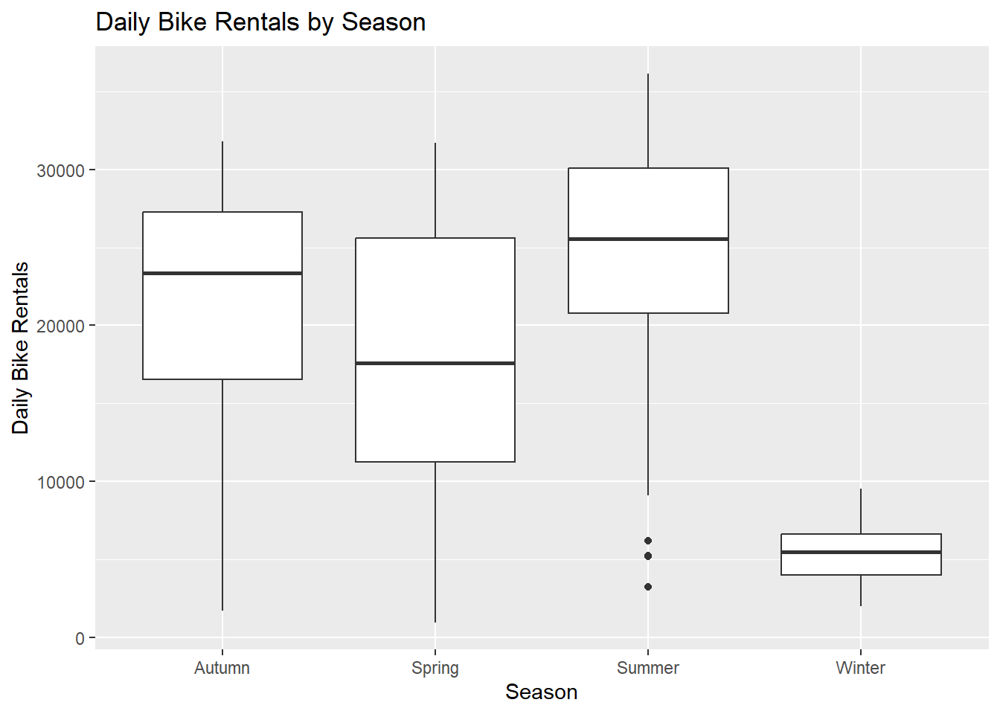
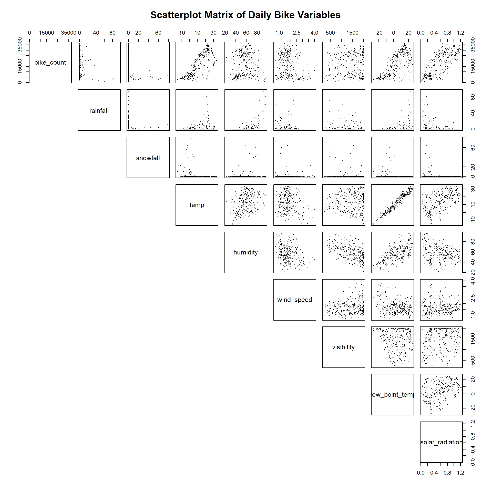
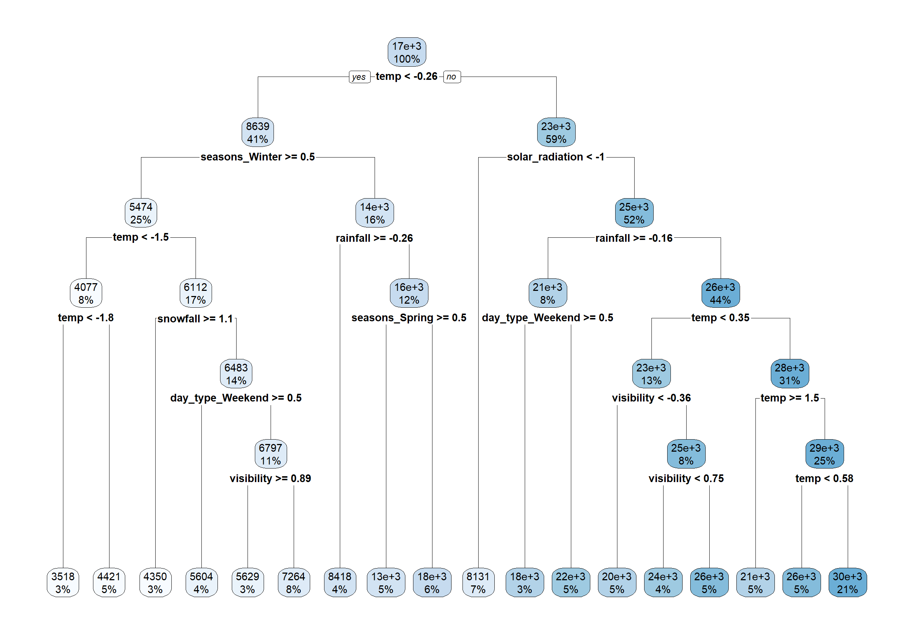
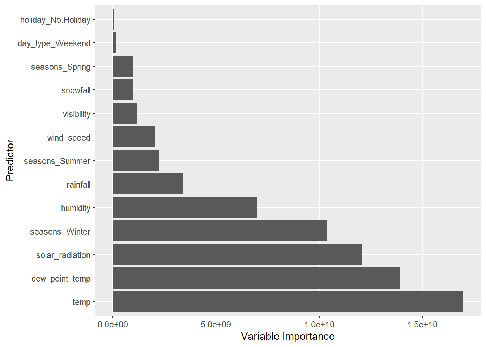
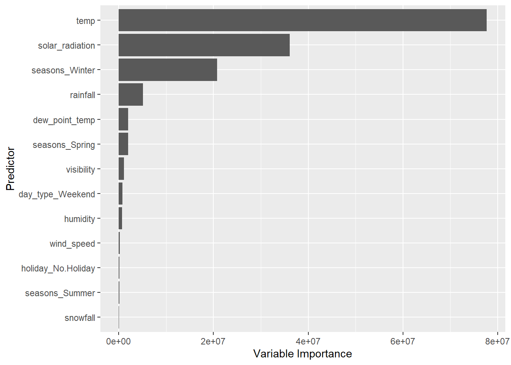

# Load the packages needed for data manipulation and exploration
library(tidyverse)
library(lubridate)
library(tidymodels)
# Read the locally saved Seoul Bike Sharing dataset
# Specify Latin1 encoding to handle special characters
bike_data <- read_csv(
"data/SeoulBikeData.csv",
locale = locale(encoding = "Latin1")
)HW10 - Modeling Practice
I. Introduction
In this assignment, we continue using the Seoul Bike Sharing dataset from HW9 to predict daily bicycle rentals with the tidymodels framework.
We begin with our previous data preparation and EDA, then use cross-validation to compare three multiple linear regression models and tune three tree-based models. We compare their performance using RMSE and MAE and refit the best model on the full dataset.
II. Reading in the Data
III. Exploratory data analysis
1) Checking for missing values
# Count missing values in each column
colSums(is.na(bike_data)) Date Rented Bike Count Hour
0 0 0
Temperature(°C) Humidity(%) Wind speed (m/s)
0 0 0
Visibility (10m) Dew point temperature(°C) Solar Radiation (MJ/m2)
0 0 0
Rainfall(mm) Snowfall (cm) Seasons
0 0 0
Holiday Functioning Day
0 0 There are no missing values in the data.
2) Check column types and values within the columns
# Examine the structure of the dataset
# glimpse() tells us the number of rows, columns, variable names, data types, and
#sample values
glimpse(bike_data)Rows: 8,760
Columns: 14
$ Date <chr> "01/12/2017", "01/12/2017", "01/12/2017", …
$ `Rented Bike Count` <dbl> 254, 204, 173, 107, 78, 100, 181, 460, 930…
$ Hour <dbl> 0, 1, 2, 3, 4, 5, 6, 7, 8, 9, 10, 11, 12, …
$ `Temperature(°C)` <dbl> -5.2, -5.5, -6.0, -6.2, -6.0, -6.4, -6.6, …
$ `Humidity(%)` <dbl> 37, 38, 39, 40, 36, 37, 35, 38, 37, 27, 24…
$ `Wind speed (m/s)` <dbl> 2.2, 0.8, 1.0, 0.9, 2.3, 1.5, 1.3, 0.9, 1.…
$ `Visibility (10m)` <dbl> 2000, 2000, 2000, 2000, 2000, 2000, 2000, …
$ `Dew point temperature(°C)` <dbl> -17.6, -17.6, -17.7, -17.6, -18.6, -18.7, …
$ `Solar Radiation (MJ/m2)` <dbl> 0.00, 0.00, 0.00, 0.00, 0.00, 0.00, 0.00, …
$ `Rainfall(mm)` <dbl> 0, 0, 0, 0, 0, 0, 0, 0, 0, 0, 0, 0, 0, 0, …
$ `Snowfall (cm)` <dbl> 0, 0, 0, 0, 0, 0, 0, 0, 0, 0, 0, 0, 0, 0, …
$ Seasons <chr> "Winter", "Winter", "Winter", "Winter", "W…
$ Holiday <chr> "No Holiday", "No Holiday", "No Holiday", …
$ `Functioning Day` <chr> "Yes", "Yes", "Yes", "Yes", "Yes", "Yes", …# head() lets us see the first six observations
head(bike_data)# A tibble: 6 × 14
Date `Rented Bike Count` Hour `Temperature(°C)` `Humidity(%)`
<chr> <dbl> <dbl> <dbl> <dbl>
1 01/12/2017 254 0 -5.2 37
2 01/12/2017 204 1 -5.5 38
3 01/12/2017 173 2 -6 39
4 01/12/2017 107 3 -6.2 40
5 01/12/2017 78 4 -6 36
6 01/12/2017 100 5 -6.4 37
# ℹ 9 more variables: `Wind speed (m/s)` <dbl>, `Visibility (10m)` <dbl>,
# `Dew point temperature(°C)` <dbl>, `Solar Radiation (MJ/m2)` <dbl>,
# `Rainfall(mm)` <dbl>, `Snowfall (cm)` <dbl>, Seasons <chr>, Holiday <chr>,
# `Functioning Day` <chr># provides min, max, quartiles, median and mean for numeric variables
summary(bike_data) Date Rented Bike Count Hour Temperature(°C)
Length:8760 Min. : 0.0 Min. : 0.00 Min. :-17.80
Class :character 1st Qu.: 191.0 1st Qu.: 5.75 1st Qu.: 3.50
Mode :character Median : 504.5 Median :11.50 Median : 13.70
Mean : 704.6 Mean :11.50 Mean : 12.88
3rd Qu.:1065.2 3rd Qu.:17.25 3rd Qu.: 22.50
Max. :3556.0 Max. :23.00 Max. : 39.40
Humidity(%) Wind speed (m/s) Visibility (10m) Dew point temperature(°C)
Min. : 0.00 Min. :0.000 Min. : 27 Min. :-30.600
1st Qu.:42.00 1st Qu.:0.900 1st Qu.: 940 1st Qu.: -4.700
Median :57.00 Median :1.500 Median :1698 Median : 5.100
Mean :58.23 Mean :1.725 Mean :1437 Mean : 4.074
3rd Qu.:74.00 3rd Qu.:2.300 3rd Qu.:2000 3rd Qu.: 14.800
Max. :98.00 Max. :7.400 Max. :2000 Max. : 27.200
Solar Radiation (MJ/m2) Rainfall(mm) Snowfall (cm) Seasons
Min. :0.0000 Min. : 0.0000 Min. :0.00000 Length:8760
1st Qu.:0.0000 1st Qu.: 0.0000 1st Qu.:0.00000 Class :character
Median :0.0100 Median : 0.0000 Median :0.00000 Mode :character
Mean :0.5691 Mean : 0.1487 Mean :0.07507
3rd Qu.:0.9300 3rd Qu.: 0.0000 3rd Qu.:0.00000
Max. :3.5200 Max. :35.0000 Max. :8.80000
Holiday Functioning Day
Length:8760 Length:8760
Class :character Class :character
Mode :character Mode :character
# unique() lets us inspect the unique values of the categorical variables.
unique(bike_data$Seasons)[1] "Winter" "Spring" "Summer" "Autumn"unique(bike_data$Holiday)[1] "No Holiday" "Holiday" unique(bike_data$"Functioning Day")[1] "Yes" "No" We have 8,760 observations across 14 variables (columns). Of these 10 are numeric and 4 are character variables. Three of the character variables are categorical (Seasons, Holiday, Functioning Day) while the Date variable needs to be converted to the proper date format.
Each observation represents one hour of bike rental activity, rather than an individual rental. The Hour variable identifies the hour of the day (0–23), while Rented Bike Count represents the number of bikes rented during that hour. The dataset covers 365 days, with 24 hourly observations per day, so there are a total of 8,760 observations.
3) Convert Date column to actual date format
# Convert Date from character to Date format (day/month/year)
# Use dmy() function from the lubridate package
bike_data$Date <- dmy(bike_data$Date)
# confirm conversion
class(bike_data$Date)[1] "Date"4) Convert the character variables into factors using factor()
After converting the character variables to factors using the factor() function, we used the levels function to identify the unique values for each one.
# Convert Seasons from character to factor
bike_data$Seasons <- factor(bike_data$Seasons)
# Display the factor's levels
levels(bike_data$Seasons)[1] "Autumn" "Spring" "Summer" "Winter"# Convert Holiday from character to factor
bike_data$Holiday <- factor(bike_data$Holiday)
# Display the factor's levels
levels(bike_data$Holiday)[1] "Holiday" "No Holiday"# Convert Functioning Day from character to factor
bike_data$"Functioning Day" <- factor(bike_data$"Functioning Day")
# Display the factor's levels
levels(bike_data$"Functioning Day")[1] "No" "Yes"5) Rename variables
# Rename variables using lower snake case for easier reference
bike_data <- bike_data |>
rename(
date = Date,
bike_count = `Rented Bike Count`,
hour = Hour,
temp = `Temperature(°C)`,
humidity = `Humidity(%)`,
wind_speed = `Wind speed (m/s)`,
visibility = `Visibility (10m)`,
dew_point_temp = `Dew point temperature(°C)`, # backticks are needed because of spaces in original name
solar_radiation = `Solar Radiation (MJ/m2)`,
rainfall = `Rainfall(mm)`,
snowfall = `Snowfall (cm)`,
seasons = Seasons,
holiday = Holiday,
functioning_day = `Functioning Day`
)
# Verify the new column names
names(bike_data) [1] "date" "bike_count" "hour" "temp"
[5] "humidity" "wind_speed" "visibility" "dew_point_temp"
[9] "solar_radiation" "rainfall" "snowfall" "seasons"
[13] "holiday" "functioning_day"6) Create summary statistics
- Numeric variables
# Generate summary statistics for all numerical variables
bike_data |>
select(where(is.numeric)) |>
summary() bike_count hour temp humidity
Min. : 0.0 Min. : 0.00 Min. :-17.80 Min. : 0.00
1st Qu.: 191.0 1st Qu.: 5.75 1st Qu.: 3.50 1st Qu.:42.00
Median : 504.5 Median :11.50 Median : 13.70 Median :57.00
Mean : 704.6 Mean :11.50 Mean : 12.88 Mean :58.23
3rd Qu.:1065.2 3rd Qu.:17.25 3rd Qu.: 22.50 3rd Qu.:74.00
Max. :3556.0 Max. :23.00 Max. : 39.40 Max. :98.00
wind_speed visibility dew_point_temp solar_radiation
Min. :0.000 Min. : 27 Min. :-30.600 Min. :0.0000
1st Qu.:0.900 1st Qu.: 940 1st Qu.: -4.700 1st Qu.:0.0000
Median :1.500 Median :1698 Median : 5.100 Median :0.0100
Mean :1.725 Mean :1437 Mean : 4.074 Mean :0.5691
3rd Qu.:2.300 3rd Qu.:2000 3rd Qu.: 14.800 3rd Qu.:0.9300
Max. :7.400 Max. :2000 Max. : 27.200 Max. :3.5200
rainfall snowfall
Min. : 0.0000 Min. :0.00000
1st Qu.: 0.0000 1st Qu.:0.00000
Median : 0.0000 Median :0.00000
Mean : 0.1487 Mean :0.07507
3rd Qu.: 0.0000 3rd Qu.:0.00000
Max. :35.0000 Max. :8.80000 - Categorical variables
+ Seasons
# Calculate summary statistics for hourly bike rentals by season
bike_data |>
group_by(seasons) |>
summarise(
observations = n(),
mean_rentals = mean(bike_count),
median_rentals = median(bike_count),
total_rentals = sum(bike_count)
)# A tibble: 4 × 5
seasons observations mean_rentals median_rentals total_rentals
<fct> <int> <dbl> <dbl> <dbl>
1 Autumn 2184 820. 764. 1790002
2 Spring 2208 730. 583 1611909
3 Summer 2208 1034. 906. 2283234
4 Winter 2160 226. 203 487169We grouped the observations by season to examine differences in hourly bike rentals. Summer had the highest average, with approximately 1,034 rentals per hour, followed by autumn (820), spring (730), and winter (226). Total rentals were also highest during summer, at about 2.28 million, compared with just 487,000 during winter. These results suggest strong seasonality in bike rental activity, with much higher demand during warmer months.
+ Holidays
# Calculate summary statistics for hourly bike rentals by holiday status
bike_data |>
group_by(holiday) |>
summarise(
observations = n(),
mean_rentals = mean(bike_count),
median_rentals = median(bike_count),
total_rentals = sum(bike_count)
)# A tibble: 2 × 5
holiday observations mean_rentals median_rentals total_rentals
<fct> <int> <dbl> <dbl> <dbl>
1 Holiday 432 500. 240 215895
2 No Holiday 8328 715. 524. 5956419We also examined hourly bike rentals based on whether a day was classified as a holiday. Non-holidays averaged approximately 715 rentals per hour, compared with 500 on holidays. Median rentals were also considerably higher on non-holidays (524.5) than on holidays (240). This suggests that bike rental activity tends to be lower during holidays. However, there were substantially fewer holiday observations (432) than non-holiday observations (8,328), so comparing hourly averages is more informative than comparing total rentals.
+ Functioning day
# Calculate summary statistics for hourly bike rentals by functioning day
bike_data |>
group_by(functioning_day) |>
summarise(
observations = n(),
mean_rentals = mean(bike_count),
median_rentals = median(bike_count),
total_rentals = sum(bike_count)
)# A tibble: 2 × 5
functioning_day observations mean_rentals median_rentals total_rentals
<fct> <int> <dbl> <dbl> <dbl>
1 No 295 0 0 0
2 Yes 8465 729. 542 6172314Next we examined bike rental activity based on whether the bike-sharing system was functioning. Of the 8,760 hourly observations, 295 were classified as non-functioning, and all recorded zero rentals. During functioning periods, the system averaged approximately 729 rentals per hour, with a median of 542 and a total of approximately 6.17 million rentals.
Because the zero rentals during non-functioning periods reflect the system being unavailable rather than necessarily indicating a lack of demand, we have decided to exclude these observations from our analysis. This leaves 8,465 hourly observations for the next stage.
# Excluding nonfunctioning hourly observations from the dataset
bike_data <- bike_data |>
filter(functioning_day == "Yes")
# Verify the number of remaining observations
nrow(bike_data)[1] 84657) Converting to daily dataset
To simplify the remaining analysis we aggregate hourly observations into daily totals.
# Aggregate hourly observations into daily observations
bike_daily <- bike_data |>
group_by(date, seasons, holiday) |> # group_by() organizes observations into desired groups
summarise(
# Calculate daily totals
bike_count = sum(bike_count),
rainfall = sum(rainfall),
snowfall = sum(snowfall),
# Calculate daily averages for weather variables
temp = mean(temp),
humidity = mean(humidity),
wind_speed = mean(wind_speed),
visibility = mean(visibility),
dew_point_temp = mean(dew_point_temp),
solar_radiation = mean(solar_radiation),
# Remove grouping after summarizing
.groups = "drop"
)
# Inspect the new daily dataset
glimpse(bike_daily)Rows: 353
Columns: 12
$ date <date> 2017-12-01, 2017-12-02, 2017-12-03, 2017-12-04, 2017-…
$ seasons <fct> Winter, Winter, Winter, Winter, Winter, Winter, Winter…
$ holiday <fct> No Holiday, No Holiday, No Holiday, No Holiday, No Hol…
$ bike_count <dbl> 9539, 8523, 7222, 8729, 8307, 6669, 8549, 8032, 7233, …
$ rainfall <dbl> 0.0, 0.0, 4.0, 0.1, 0.0, 1.3, 0.0, 0.0, 0.0, 4.1, 0.0,…
$ snowfall <dbl> 0.0, 0.0, 0.0, 0.0, 0.0, 8.6, 10.4, 0.0, 0.0, 32.5, 0.…
$ temp <dbl> -2.45416667, 1.32500000, 4.87500000, -0.30416667, -4.4…
$ humidity <dbl> 45.87500, 61.95833, 81.54167, 52.50000, 36.41667, 70.7…
$ wind_speed <dbl> 1.5375000, 1.7125000, 1.6125000, 3.4500000, 1.1083333,…
$ visibility <dbl> 1870.7500, 1471.0833, 455.7500, 1362.8333, 1959.4583, …
$ dew_point_temp <dbl> -13.5458333, -5.7166667, 1.8833333, -9.9250000, -17.42…
$ solar_radiation <dbl> 0.24875000, 0.26375000, 0.12541667, 0.28291667, 0.0358…Hourly observations were aggregated into a new daily dataset called bike_daily by grouping the data by date, season, and holiday status. We then calculated daily totals for bike rentals, rainfall, and snowfall, while taking the average of the remaining weather variables. After excluding nonfunctioning hours (295 hrs = 24 x 12 non-functioning days + 7 additional hours during functioning days), the resulting dataset contains 353 daily observations across 12 variables, compared with the original 8,760 hourly observations across 14 variables. This daily dataset will be used for the remainder of our analysis.
8) Summarizing daily stats
- Numeric variables
# Generate summary statistics for our daily dataset
summary(bike_daily) date seasons holiday bike_count
Min. :2017-12-01 Autumn:81 Holiday : 17 Min. : 977
1st Qu.:2018-02-27 Spring:90 No Holiday:336 1st Qu.: 6967
Median :2018-05-28 Summer:92 Median :18563
Mean :2018-05-28 Winter:90 Mean :17485
3rd Qu.:2018-08-24 3rd Qu.:26285
Max. :2018-11-30 Max. :36149
rainfall snowfall temp humidity
Min. : 0.000 Min. : 0.000 Min. :-14.738 Min. :22.25
1st Qu.: 0.000 1st Qu.: 0.000 1st Qu.: 3.304 1st Qu.:47.58
Median : 0.000 Median : 0.000 Median : 13.738 Median :57.17
Mean : 3.576 Mean : 1.863 Mean : 12.776 Mean :58.17
3rd Qu.: 0.500 3rd Qu.: 0.000 3rd Qu.: 22.592 3rd Qu.:67.71
Max. :95.500 Max. :78.700 Max. : 33.742 Max. :95.88
wind_speed visibility dew_point_temp solar_radiation
Min. :0.6625 Min. : 214.3 Min. :-27.750 Min. :0.02917
1st Qu.:1.3042 1st Qu.:1087.0 1st Qu.: -5.188 1st Qu.:0.28333
Median :1.6583 Median :1557.8 Median : 4.612 Median :0.56500
Mean :1.7261 Mean :1434.0 Mean : 3.954 Mean :0.56773
3rd Qu.:1.9542 3rd Qu.:1874.3 3rd Qu.: 14.921 3rd Qu.:0.82000
Max. :4.0000 Max. :2000.0 Max. : 25.038 Max. :1.21667 The daily dataset now contains 353 observations, with an average of 17,485 bike rentals per day. Daily rentals ranged from a minimum of 977 to a maximum of 36,149. The median of 18,563 is slightly higher than the mean, suggesting that some lower-rental days may be pulling the average down. The dataset includes 17 holidays and 336 non-holidays. The weather variables are also summarized.
- Categorical variables
+ Seasons
# Calculate summary statistics for daily bike rentals by season
bike_daily |>
group_by(seasons) |>
summarise(
days = n(),
mean_rentals = mean(bike_count),
median_rentals = median(bike_count),
total_rentals = sum(bike_count)
)# A tibble: 4 × 5
seasons days mean_rentals median_rentals total_rentals
<fct> <int> <dbl> <dbl> <dbl>
1 Autumn 81 22099. 23350 1790002
2 Spring 90 17910. 17590 1611909
3 Summer 92 24818. 25572. 2283234
4 Winter 90 5413. 5498 487169+ Holidays
# Calculate summary statistics for daily bike rentals by holiday status
bike_daily |>
group_by(holiday) |>
summarise(
days = n(),
mean_rentals = mean(bike_count),
median_rentals = median(bike_count),
total_rentals = sum(bike_count)
)# A tibble: 2 × 5
holiday days mean_rentals median_rentals total_rentals
<fct> <int> <dbl> <dbl> <dbl>
1 Holiday 17 12700. 7184 215895
2 No Holiday 336 17727. 19104. 5956419Next we calculated summary statistics for daily bike rentals by season and holiday status.
Summer had the highest average with approximately 24,818 rentals per day, followed by autumn (22,099), spring (17,910), and winter (5,413). This suggests strong seasonality with substantially fewer rentals as the months get colder.
We also found that bike rentals were lower on holidays, averaging about 12,700 per day compared with 17,727 on non-holidays. The number of holiday observations was relatively small (17 days), compared with 336 non-holidays.
- Graphical summaries
+ Boxplots
# Compare the distribution of daily bike rentals across seasons
ggplot(bike_daily, aes(x = seasons, y = bike_count)) +
geom_boxplot() +
labs(
title = "Daily Bike Rentals by Season",
x = "Season",
y = "Daily Bike Rentals"
)
# Compare the distribution of daily bike rentals on holidays and non-holidays
ggplot(bike_daily, aes(x = holiday, y = bike_count)) +
geom_boxplot() +
labs(
title = "Daily Bike Rentals by Holiday Status",
x = "Holiday Status",
y = "Daily Bike Rentals"
)
The boxplots confirm bike rentals vary considerably by season and holiday status, consistent with the differences observed in our summary statistics above.
Summer has the highest median rentals, followed by autumn, spring, and winter. We notice that winter has a noticeably smaller spread, while summer has a few unusually low observations.
The holiday boxplot also shows that median daily rentals are much lower on holidays than on non-holidays. That said, it does appear that both groups have substantial variation.
+ Scatterplots
# Select all numerical variables from our daily dataset
bike_numeric <- bike_daily |>
select(where(is.numeric))
# Create a scatterplot matrix using all numerical variables
# Display only the upper triangle to avoid duplicate plots
pairs(
bike_numeric,
lower.panel = NULL,
main = "Scatterplot Matrix of Daily Bike Variables",
pch = 16,
cex = 0.3,
cex.labels = 1.2
)
+ Correlation matrix and heat map
# Select all numerical variables from our daily dataset
bike_numeric <- bike_daily |>
select(where(is.numeric))
# Calculate the correlation matrix
cor_matrix <- cor(bike_numeric)
# Display the correlations rounded to two decimal places
round(cor_matrix, 2) bike_count rainfall snowfall temp humidity wind_speed
bike_count 1.00 -0.24 -0.27 0.75 0.04 -0.19
rainfall -0.24 1.00 -0.02 0.14 0.53 -0.10
snowfall -0.27 -0.02 1.00 -0.27 0.07 0.02
temp 0.75 0.14 -0.27 1.00 0.40 -0.26
humidity 0.04 0.53 0.07 0.40 1.00 -0.23
wind_speed -0.19 -0.10 0.02 -0.26 -0.23 1.00
visibility 0.17 -0.22 -0.10 0.00 -0.56 0.21
dew_point_temp 0.65 0.26 -0.21 0.96 0.63 -0.29
solar_radiation 0.74 -0.32 -0.23 0.55 -0.27 0.10
visibility dew_point_temp solar_radiation
bike_count 0.17 0.65 0.74
rainfall -0.22 0.26 -0.32
snowfall -0.10 -0.21 -0.23
temp 0.00 0.96 0.55
humidity -0.56 0.63 -0.27
wind_speed 0.21 -0.29 0.10
visibility 1.00 -0.15 0.27
dew_point_temp -0.15 1.00 0.38
solar_radiation 0.27 0.38 1.00# Convert correlation matrix to a data frame
cor_data <- as.data.frame(as.table(cor_matrix))
# Set the variable order to match the scatterplot matrix
var_order <- colnames(cor_matrix)
cor_data$Var1 <- factor(cor_data$Var1, levels = var_order)
cor_data$Var2 <- factor(cor_data$Var2, levels = var_order)
# Keep only the upper-right triangle, including the diagonal
cor_data <- cor_data |>
filter(as.numeric(Var1) <= as.numeric(Var2))
# Create the heatmap
ggplot(cor_data, aes(x = Var2, y = Var1, fill = Freq)) +
geom_tile() +
scale_y_discrete(limits = rev(var_order)) +
scale_fill_gradient2(
low = "yellow",
mid = "orange",
high = "red",
midpoint = 0,
limits = c(-1, 1)
) +
labs(
title = "Correlation Heatmap of Daily Bike Variables",
x = NULL,
y = NULL,
fill = "Correlation"
) +
theme(
axis.text.x = element_text(angle = 45, hjust = 1)
)
The correlation matrix helps us understand the linear relationship, or lack thereof, between all the numerical variables. To further illustrate we use a scatterplot matrix and correlation heatmap. Since the relationships are mirrored, we displayed only the upper-right half of the matrix. Important to note that a scatterplot also helps us identify non-linear relationships.
Bike rentals have relatively strong positive correlations with temperature (0.75), solar radiation (0.74), and dew point temperature (0.65). Rainfall (-0.24) and snowfall (-0.27) have weaker negative correlations, while humidity (0.04) shows almost no linear relationship with bike rentals.
We also notice a very strong correlation between temperature and dew point temperature (0.96), suggesting potential multicollinearity in our regression models. The scatterplots also suggest that some relationships, particularly between bike rentals and temperature, may not be entirely linear.
IV. Splitting the Data
Use functions from tidymodels to split the data into a training and test set (75/25 split). Use the strata argument to stratify the split on the seasons variable.
1) Create a 75/25 training and test split stratified by season
Similar to what we did in HW9, just that this time we will use the training set for cross-validation. Why? Because cross-validation gives us a more reliable estimate of prediction error by evaluating the model on different held-out groups rather than relying on a single random split.
# Set seed so the random split can be reproduced
set.seed(123)
# Split daily data into 75% training and 25% testing
# Stratify by seasons to preserve the seasonal distribution
bike_split <- initial_split(
bike_daily,
prop = 0.75, # designates the proportion for training
strata = seasons
)
# Create separate training and test datasets
bike_train <- training(bike_split)
bike_test <- testing(bike_split)
# Verify the number of observations in each dataset
nrow(bike_train)[1] 263nrow(bike_test)[1] 90# Check the number of observations by season in each dataset
table(bike_train$seasons)
Autumn Spring Summer Winter
60 67 69 67 table(bike_test$seasons)
Autumn Spring Summer Winter
21 23 23 23 2) Create 10-fold cross-validation splits on the training set
Here we use the vfold_cv() function to create 10 folds.
# Set seed so the cross-validation folds are reproducible
set.seed(123)
# Create 10-fold cross-validation using only the training data
bike_cv <- vfold_cv(
bike_train,
v = 10
)
# Display the cross-validation folds
bike_cv# 10-fold cross-validation
# A tibble: 10 × 2
splits id
<list> <chr>
1 <split [236/27]> Fold01
2 <split [236/27]> Fold02
3 <split [236/27]> Fold03
4 <split [237/26]> Fold04
5 <split [237/26]> Fold05
6 <split [237/26]> Fold06
7 <split [237/26]> Fold07
8 <split [237/26]> Fold08
9 <split [237/26]> Fold09
10 <split [237/26]> Fold10V. Fitting Multiple Linear Regression Models with tidymodels
1) Recipe 1: Main effects
This first model includes only main effects, with no interactions or quadratic terms. The pre-processing steps are as follows:
- Create weekday/weekend factor from the date variable
- Standardize numeric predictors
- Create dummy variables for seasons, holiday, and day type
# Create Recipe 1 for our basic multiple linear regression model
bike_rec_1 <- recipe(bike_count ~ ., data = bike_train) |>
# Extract the day of the week from the date variable using step_date()
# step_date() defines a pre-processing operation within a recipe
# it extracts information from a date variable via the features argument
step_date(date, features = "dow") |>
# Create a factor identifying weekdays and weekends using step_mutate()
# date_dow contains the day of the week created by step_date()
step_mutate(
day_type = factor(
if_else(date_dow %in% c("Sat", "Sun"), "Weekend", "Weekday")
)
) |>
# Remove the original date and intermediate day-of-week variable
# step_rm() defines which variables to remove from the data
# these variables will not be used as predictors
step_rm(date, date_dow) |>
# Standardize numeric predictors, but not the response
# step_normalize() defines a standardization operation within a recipe
# it subtracts the mean and divides by the standard deviation
step_normalize(all_numeric_predictors()) |>
# step_dummy() defines a dummy variable conversion within a recipe
# it converts categorical variables into numeric indicator variables
step_dummy(seasons, holiday, day_type)
# Display Recipe 1
bike_rec_12) Recipe 2: Main effects and interactions
This second model includes main effects from Recipe 1 but also adds interactions. The pre-processing steps are as follows:
- Interaction between seasons and holiday
- Interaction between seasons and temperature
- Interaction between temperature and rainfall
# Create Recipe 2 using the same preprocessing steps as Recipe 1
bike_rec_2 <- bike_rec_1 |>
# step_interact() creates interaction terms between variables
# starts_with() selects dummy variables with a common prefix
step_interact(
terms = ~
# Interaction between seasons and holiday
starts_with("seasons_"):starts_with("holiday_") +
# Interaction between seasons and temperature
starts_with("seasons_"):temp +
# Interaction between temperature and rainfall
temp:rainfall
)
# Display Recipe 2
bike_rec_23) Recipe 3: Interactions and quadratic terms
This third model takes Recipe 2 and adds the following quadratic terms:
- Quadratic term for standardized temperature
- Quadratic term for standardized humidity
# Create Recipe 3 using the same preprocessing steps as Recipe 2
bike_rec_3 <- bike_rec_2 |>
# step_mutate() creates quadratic terms for temp and humidity
# these variables were already standardized in Recipe 1
# squaring them allows for nonlinear relationships
step_mutate(
temp_sq = temp^2,
humidity_sq = humidity^2
)
# Display Recipe 3
bike_rec_34) Specify the linear regression model with the lm engine
Each of the recipes determines what information goes into a given model and how it’s prepared. At this stage of the exercise all three recipes will use multiple linear regression (MLR) to make predictions.
# Specify a multiple linear regression model using tidymodels
# linear_reg() defines the model type as linear regression
# set_engine() specifies which R function will fit the model
# "lm" uses ordinary least squares regression from base R
bike_lm <- linear_reg() |> # from the parsnip package within tidymodels
set_engine("lm")
# Display the model specification
bike_lmLinear Regression Model Specification (regression)
Computational engine: lm 5) Create workflows for Models 1, 2, and 3
Now that we have our three recipes (bike_rec_1, bike_rec_2, bike_rec_3) and our linear regression specification (bike_lm), we’ll combine them into workflows.
# Create Workflow 1 using Recipe 1 and our linear regression model
# workflow() creates a workflow object
# add_recipe() adds the preprocessing instructions
# add_model() adds the model specification
bike_wfl_1 <- workflow() |>
add_recipe(bike_rec_1) |>
add_model(bike_lm)
# Create Workflow 2 using Recipe 2 and the same regression model
bike_wfl_2 <- workflow() |>
add_recipe(bike_rec_2) |>
add_model(bike_lm)
# Create Workflow 3 using Recipe 3 and the same regression model
bike_wfl_3 <- workflow() |>
add_recipe(bike_rec_3) |>
add_model(bike_lm)
# Display the three workflows
bike_wfl_1══ Workflow ════════════════════════════════════════════════════════════════════
Preprocessor: Recipe
Model: linear_reg()
── Preprocessor ────────────────────────────────────────────────────────────────
5 Recipe Steps
• step_date()
• step_mutate()
• step_rm()
• step_normalize()
• step_dummy()
── Model ───────────────────────────────────────────────────────────────────────
Linear Regression Model Specification (regression)
Computational engine: lm bike_wfl_2══ Workflow ════════════════════════════════════════════════════════════════════
Preprocessor: Recipe
Model: linear_reg()
── Preprocessor ────────────────────────────────────────────────────────────────
6 Recipe Steps
• step_date()
• step_mutate()
• step_rm()
• step_normalize()
• step_dummy()
• step_interact()
── Model ───────────────────────────────────────────────────────────────────────
Linear Regression Model Specification (regression)
Computational engine: lm bike_wfl_3══ Workflow ════════════════════════════════════════════════════════════════════
Preprocessor: Recipe
Model: linear_reg()
── Preprocessor ────────────────────────────────────────────────────────────────
7 Recipe Steps
• step_date()
• step_mutate()
• step_rm()
• step_normalize()
• step_dummy()
• step_interact()
• step_mutate()
── Model ───────────────────────────────────────────────────────────────────────
Linear Regression Model Specification (regression)
Computational engine: lm 6) Fit all three models using 10-fold cross-validation
When fitting a model, we can use different approaches. For example we could choose to fit on the entire data set, do a single 75/25 split, or even do bootstrap resampling. For this exercise we are choosing to do a 10-fold cross-validation, which involved fitting the model multiple times on different subsets of the training data. Recall the subsets were created above in section IV.2.
# Fit Model 1 using 10-fold cross-validation
# fit_resamples() fits the model across the folds created in Section IV
# metric_set() specifies RMSE and MAE as our evaluation metrics
bike_cv_fit_1 <- bike_wfl_1 |>
fit_resamples(
resamples = bike_cv,
metrics = metric_set(rmse, mae)
)
# Fit Model 2 using the same 10 folds
bike_cv_fit_2 <- bike_wfl_2 |>
fit_resamples(
resamples = bike_cv,
metrics = metric_set(rmse, mae)
)
# Fit Model 3 using the same 10 folds
bike_cv_fit_3 <- bike_wfl_3 |>
fit_resamples(
resamples = bike_cv,
metrics = metric_set(rmse, mae)
)
# Display the cross-validation results
bike_cv_fit_1# Resampling results
# 10-fold cross-validation
# A tibble: 10 × 4
splits id .metrics .notes
<list> <chr> <list> <list>
1 <split [236/27]> Fold01 <tibble [2 × 4]> <tibble [0 × 4]>
2 <split [236/27]> Fold02 <tibble [2 × 4]> <tibble [0 × 4]>
3 <split [236/27]> Fold03 <tibble [2 × 4]> <tibble [0 × 4]>
4 <split [237/26]> Fold04 <tibble [2 × 4]> <tibble [0 × 4]>
5 <split [237/26]> Fold05 <tibble [2 × 4]> <tibble [0 × 4]>
6 <split [237/26]> Fold06 <tibble [2 × 4]> <tibble [0 × 4]>
7 <split [237/26]> Fold07 <tibble [2 × 4]> <tibble [0 × 4]>
8 <split [237/26]> Fold08 <tibble [2 × 4]> <tibble [0 × 4]>
9 <split [237/26]> Fold09 <tibble [2 × 4]> <tibble [0 × 4]>
10 <split [237/26]> Fold10 <tibble [2 × 4]> <tibble [0 × 4]>bike_cv_fit_2# Resampling results
# 10-fold cross-validation
# A tibble: 10 × 4
splits id .metrics .notes
<list> <chr> <list> <list>
1 <split [236/27]> Fold01 <tibble [2 × 4]> <tibble [0 × 4]>
2 <split [236/27]> Fold02 <tibble [2 × 4]> <tibble [0 × 4]>
3 <split [236/27]> Fold03 <tibble [2 × 4]> <tibble [0 × 4]>
4 <split [237/26]> Fold04 <tibble [2 × 4]> <tibble [0 × 4]>
5 <split [237/26]> Fold05 <tibble [2 × 4]> <tibble [0 × 4]>
6 <split [237/26]> Fold06 <tibble [2 × 4]> <tibble [0 × 4]>
7 <split [237/26]> Fold07 <tibble [2 × 4]> <tibble [1 × 4]>
8 <split [237/26]> Fold08 <tibble [2 × 4]> <tibble [0 × 4]>
9 <split [237/26]> Fold09 <tibble [2 × 4]> <tibble [0 × 4]>
10 <split [237/26]> Fold10 <tibble [2 × 4]> <tibble [0 × 4]>
There were issues with some computations:
- Warning(s) x1: prediction from rank-deficient fit; consider predict(., rankdefic...
Run `show_notes(.Last.tune.result)` for more information.bike_cv_fit_3# Resampling results
# 10-fold cross-validation
# A tibble: 10 × 4
splits id .metrics .notes
<list> <chr> <list> <list>
1 <split [236/27]> Fold01 <tibble [2 × 4]> <tibble [0 × 4]>
2 <split [236/27]> Fold02 <tibble [2 × 4]> <tibble [0 × 4]>
3 <split [236/27]> Fold03 <tibble [2 × 4]> <tibble [0 × 4]>
4 <split [237/26]> Fold04 <tibble [2 × 4]> <tibble [0 × 4]>
5 <split [237/26]> Fold05 <tibble [2 × 4]> <tibble [0 × 4]>
6 <split [237/26]> Fold06 <tibble [2 × 4]> <tibble [0 × 4]>
7 <split [237/26]> Fold07 <tibble [2 × 4]> <tibble [1 × 4]>
8 <split [237/26]> Fold08 <tibble [2 × 4]> <tibble [0 × 4]>
9 <split [237/26]> Fold09 <tibble [2 × 4]> <tibble [0 × 4]>
10 <split [237/26]> Fold10 <tibble [2 × 4]> <tibble [0 × 4]>
There were issues with some computations:
- Warning(s) x1: prediction from rank-deficient fit; consider predict(., rankdefic...
Run `show_notes(.Last.tune.result)` for more information.7) Compare cross-validation errors and select the best MLR model
Now we compare the average RMSE and MAE across the three models and select the best-performing MLR model.
# Collect the cross-validation metrics for all three models
# collect_metrics() combines the prediction errors across the 10 folds
bike_cv_comparison <- bind_rows(
collect_metrics(bike_cv_fit_1) |> mutate(model = "Model 1"),
collect_metrics(bike_cv_fit_2) |> mutate(model = "Model 2"),
collect_metrics(bike_cv_fit_3) |> mutate(model = "Model 3")
) |>
# Keep the model name, metric, and average error
select(model, .metric, mean) |>
# Display RMSE and MAE as separate columns
pivot_wider(names_from = .metric, values_from = mean) |>
# Sort models from lowest to highest RMSE
arrange(rmse)
# Display the comparison
bike_cv_comparison# A tibble: 3 × 3
model mae rmse
<chr> <dbl> <dbl>
1 Model 2 2253. 3127.
2 Model 3 2238. 3165.
3 Model 1 3223. 4189.# Select Model 2 based on the lowest cross-validation RMSE
best_lm_workflow <- bike_wfl_2Based on the cross-validation results, Model 2 had the lowest RMSE (3,127), followed by Model 3 (3,165) and Model 1 (4,189). Overall, the results suggest that adding interaction terms improved our predictions, while adding quadratic terms did not further improve RMSE.
We note that although Model 3 had a slightly lower MAE, we selected Model 2 based on RMSE, because RMSE as a metric penalizes large prediction errors more heavily than MAE (RMSE squares the errors before averaging), and so we are placing more importance on avoiding large prediction errors.
8) Fit the selected MLR model on the training set
Now that Model 2 has been selected based on its cross-validation RMSE, we proceed to fit it using the entire 75% training dataset.
# Fit selected MLR model using the original 75/25 split
# last_fit() fits the model on the entire training set
# it also evaluates predictions on the untouched test set
best_lm_fit <- best_lm_workflow |>
last_fit(
split = bike_split,
metrics = metric_set(rmse, mae)
)
# Display the final MLR fit
best_lm_fit# Resampling results
# Manual resampling
# A tibble: 1 × 6
splits id .metrics .notes .predictions .workflow
<list> <chr> <list> <list> <list> <list>
1 <split [263/90]> train/test split <tibble> <tibble> <tibble> <workflow># Display the test-set RMSE and MAE for our selected MLR model
collect_metrics(best_lm_fit)# A tibble: 2 × 4
.metric .estimator .estimate .config
<chr> <chr> <dbl> <chr>
1 rmse standard 3081. pre0_mod0_post0
2 mae standard 2357. pre0_mod0_post0After selecting Model 2 based on the lowest cross-validation RMSE, we fitted it on the entire training set and evaluated it on the test set. The resulting RMSE was 3,081 and the MAE was 2,357. The test-set RMSE was close to our cross-validation RMSE of 3,127, suggesting that the model performs reasonably consistently on unseen data.
VI. Fitting Other Models
We now move from multiple linear regression to tree-based models, including regression trees, bagged trees, and random forests, which use different approaches to capture relationships between predictors and improve prediction accuracy. For these models we will use the 1st recipe from the MLR section above.
1) Regression Tree
Divides the data into smaller groups based on predictor values and uses the average response within each group to make predictions.The steps are as follows:
- Specify the regression tree and tuning parameters
# Specify a regression tree model using tidymodels
# decision_tree() defines the model as a regression tree
# tune() allows CV to select the best tuning parameter values
# min_n = 20 requires at least 20 observations to split a node
bike_tree_mod <- decision_tree(
tree_depth = tune(),
min_n = 20,
cost_complexity = tune()
) |>
set_engine("rpart") |>
set_mode("regression")
# Display the model specification
bike_tree_modDecision Tree Model Specification (regression)
Main Arguments:
cost_complexity = tune()
tree_depth = tune()
min_n = 20
Computational engine: rpart # Create a workflow using Recipe 1 and our regression tree model
bike_tree_wfl <- workflow() |>
add_recipe(bike_rec_1) |>
add_model(bike_tree_mod)- Tune using the training-set cross-validation folds
# Set seed so the tuning process is reproducible
set.seed(123)
# Tune the regression tree using our 10-fold cross-validation
# tune_grid() tests different combinations of tuning parameters
# grid = 15 generates 15 combinations to evaluate
bike_tree_tuned <- bike_tree_wfl |>
tune_grid(
resamples = bike_cv,
grid = 15,
metrics = metric_set(rmse, mae)
)
# Collect the cross-validation results
# Arrange the results from lowest to highest RMSE
bike_tree_tuned |>
collect_metrics() |>
filter(.metric == "rmse") |>
arrange(mean)# A tibble: 15 × 8
cost_complexity tree_depth .metric .estimator mean n std_err .config
<dbl> <int> <chr> <chr> <dbl> <int> <dbl> <chr>
1 6.11e- 5 6 rmse standard 3739. 10 202. pre0_mod10…
2 1.93e- 9 8 rmse standard 3750. 10 182. pre0_mod03…
3 2.68e- 4 10 rmse standard 3778. 10 190. pre0_mod11…
4 7.20e- 7 9 rmse standard 3781. 10 190. pre0_mod07…
5 1 e-10 11 rmse standard 3781. 10 190. pre0_mod01…
6 8.48e- 9 14 rmse standard 3781. 10 190. pre0_mod04…
7 3.16e- 6 13 rmse standard 3781. 10 190. pre0_mod08…
8 1.18e- 3 15 rmse standard 3787. 10 191. pre0_mod12…
9 1.64e- 7 5 rmse standard 3876. 10 200. pre0_mod06…
10 4.39e-10 4 rmse standard 4156. 10 168. pre0_mod02…
11 2.28e- 2 7 rmse standard 4303. 10 182. pre0_mod14…
12 5.18e- 3 3 rmse standard 4559. 10 145. pre0_mod13…
13 1.39e- 5 2 rmse standard 4690. 10 232. pre0_mod09…
14 1 e- 1 12 rmse standard 5416. 10 207. pre0_mod15…
15 3.73e- 8 1 rmse standard 7060. 10 376. pre0_mod05…- Select the best regression tree and finalize the workflow
# Select the best regression tree based on the lowest CV RMSE
# select_best() identifies the best tuning parameter combination
bike_tree_best <- select_best(
bike_tree_tuned,
metric = "rmse"
)
# Display the selected tuning parameters
bike_tree_best# A tibble: 1 × 3
cost_complexity tree_depth .config
<dbl> <int> <chr>
1 0.0000611 6 pre0_mod10_post0# Finalize the workflow using the selected tuning parameters
# finalize_workflow() replaces tune() with the selected values
bike_tree_final_wfl <- bike_tree_wfl |>
finalize_workflow(bike_tree_best)
# Fit the selected regression tree on the entire training set
# fit() trains the model using all training observations
bike_tree_train_fit <- bike_tree_final_wfl |>
fit(data = bike_train)
# Display the fitted regression tree
bike_tree_train_fit══ Workflow [trained] ══════════════════════════════════════════════════════════
Preprocessor: Recipe
Model: decision_tree()
── Preprocessor ────────────────────────────────────────────────────────────────
5 Recipe Steps
• step_date()
• step_mutate()
• step_rm()
• step_normalize()
• step_dummy()
── Model ───────────────────────────────────────────────────────────────────────
n= 263
node), split, n, deviance, yval
* denotes terminal node
1) root 263 25536330000 17295.190
2) temp< -0.2623656 109 2929334000 8638.789
4) seasons_Winter>=0.5 67 238111900 5474.194
8) temp< -1.537823 21 24940570 4077.095
16) temp< -1.848146 8 3295468 3517.500 *
17) temp>=-1.848146 13 17598290 4421.462 *
9) temp>=-1.537823 46 153469100 6112.000
18) snowfall>=1.085861 8 10038760 4350.250 *
19) snowfall< 1.085861 38 113372800 6482.895
38) day_type_Weekend>=0.5 10 30304920 5604.200 *
39) day_type_Weekend< 0.5 28 72589330 6796.714
78) visibility>=0.8931158 8 25601820 5628.875 *
79) visibility< 0.8931158 20 31712400 7263.850 *
5) seasons_Winter< 0.5 42 949863600 13687.070
10) rainfall>=-0.2571349 11 139349100 8418.273 *
11) rainfall< -0.2571349 31 396797400 15556.650
22) seasons_Spring>=0.5 14 76964920 13076.500 *
23) seasons_Spring< 0.5 17 162798000 17599.120 *
3) temp>=-0.2623656 154 8658212000 23422.120
6) solar_radiation< -1.012344 18 336145000 8131.056 *
7) solar_radiation>=-1.012344 136 3556331000 25445.940
14) rainfall>=-0.1574262 21 389911600 20657.710
28) day_type_Weekend>=0.5 8 105784700 18339.250 *
29) day_type_Weekend< 0.5 13 214661800 22084.460 *
15) rainfall< -0.1574262 115 2597029000 26320.310
30) temp< 0.3549168 34 574640800 23217.940
60) visibility< -0.3624895 12 229010000 19939.330 *
61) visibility>=-0.3624895 22 146280700 25006.270
122) visibility< 0.7457674 10 52168030 23576.900 *
123) visibility>=0.7457674 12 56655700 26197.420 *
31) temp>=0.3549168 81 1557788000 27622.540
62) temp>=1.500792 14 72606990 21297.930 *
63) temp< 1.500792 67 808153800 28944.100
126) temp< 0.5813303 12 150799500 25954.330 *
127) temp>=0.5813303 55 526686300 29596.420 *Our selected regression tree was fitted using all 263 training observations. The first split was based on temperature, separating days with lower average rentals (8,639) from those with higher average rentals (23,422). The tree then continued splitting the observations using other predictors, including season, rainfall, and visibility.
The selected regression tree had a 10-fold cross-validation RMSE of 3,739, compared with 3,127 for our best MLR model (Model 2), suggesting that MLR performed better in predicting daily bicycle rentals.
2) Bagged Tree
What is a bagged tree? Instead of fitting a single regression tree, bagging fits multiple trees using bootstrap samples of the training data and averages their predictions. The goal is to reduce variability and potentially improve prediction accuracy.The steps are as follows:
- Specify the bagged tree and tuning parameters
# Load the package needed to fit bagged tree models
library(baguette)
# Specify a bagged tree model using tidymodels
# bag_tree() defines a model that combines multiple trees
# tree_depth = 5 limits the maximum depth of each tree
# min_n = 10 requires at least 10 observations to split a node
# tune() allows CV to select the best cost complexity value
bike_bag_mod <- bag_tree(
tree_depth = 5,
min_n = 10,
cost_complexity = tune()
) |>
set_engine("rpart") |>
set_mode("regression")
# Display the model specification
bike_bag_modBagged Decision Tree Model Specification (regression)
Main Arguments:
cost_complexity = tune()
tree_depth = 5
min_n = 10
Computational engine: rpart # Create a workflow using Recipe 1 and our bagged tree model
bike_bag_wfl <- workflow() |>
add_recipe(bike_rec_1) |>
add_model(bike_bag_mod)
# Display the workflow
bike_bag_wfl══ Workflow ════════════════════════════════════════════════════════════════════
Preprocessor: Recipe
Model: bag_tree()
── Preprocessor ────────────────────────────────────────────────────────────────
5 Recipe Steps
• step_date()
• step_mutate()
• step_rm()
• step_normalize()
• step_dummy()
── Model ───────────────────────────────────────────────────────────────────────
Bagged Decision Tree Model Specification (regression)
Main Arguments:
cost_complexity = tune()
tree_depth = 5
min_n = 10
Computational engine: rpart - Tune using the training-set cross-validation folds
# Set seed so the tuning process is reproducible
set.seed(123)
# Tune the bagged tree using our 10-fold cross-validation
# tune_grid() tests different values of cost complexity
# grid = 15 generates 15 values to evaluate
bike_bag_tuned <- bike_bag_wfl |>
tune_grid(
resamples = bike_cv,
grid = 15,
metrics = metric_set(rmse, mae)
)
# Collect the cross-validation results
# Arrange the results from lowest to highest RMSE
bike_bag_tuned |>
collect_metrics() |>
filter(.metric == "rmse") |>
arrange(mean)# A tibble: 15 × 7
cost_complexity .metric .estimator mean n std_err .config
<dbl> <chr> <chr> <dbl> <int> <dbl> <chr>
1 1.47e- 8 rmse standard 3207. 10 173. pre0_mod04_post0
2 1.94e- 5 rmse standard 3209. 10 125. pre0_mod10_post0
3 2.45e- 4 rmse standard 3214. 10 192. pre0_mod12_post0
4 6.09e- 5 rmse standard 3230. 10 177. pre0_mod11_post0
5 6.38e- 7 rmse standard 3242. 10 174. pre0_mod07_post0
6 3.66e- 9 rmse standard 3247. 10 177. pre0_mod03_post0
7 6.99e- 8 rmse standard 3260. 10 182. pre0_mod05_post0
8 2.84e- 7 rmse standard 3263. 10 140. pre0_mod06_post0
9 1.69e-10 rmse standard 3281. 10 182. pre0_mod01_post0
10 1.90e- 6 rmse standard 3288. 10 164. pre0_mod08_post0
11 5.55e- 6 rmse standard 3313. 10 162. pre0_mod09_post0
12 7.12e-10 rmse standard 3367. 10 171. pre0_mod02_post0
13 1.10e- 3 rmse standard 3368. 10 158. pre0_mod13_post0
14 7.47e- 3 rmse standard 3588. 10 178. pre0_mod14_post0
15 6.41e- 2 rmse standard 4554. 10 145. pre0_mod15_post0- Select the best bagged tree and finalize the workflow
# Select the best bagged tree based on the lowest CV RMSE
# select_best() identifies the best tuning parameter value
bike_bag_best <- select_best(
bike_bag_tuned,
metric = "rmse"
)
# Display the selected tuning parameter
bike_bag_best# A tibble: 1 × 2
cost_complexity .config
<dbl> <chr>
1 0.0000000147 pre0_mod04_post0# Finalize the workflow using the selected tuning parameter
# finalize_workflow() replaces tune() with the selected value
bike_bag_final_wfl <- bike_bag_wfl |>
finalize_workflow(bike_bag_best)
# Fit the selected bagged tree on the entire training set
# fit() trains the model using all training observations
bike_bag_train_fit <- bike_bag_final_wfl |>
fit(data = bike_train)
# Display the fitted bagged tree
bike_bag_train_fit══ Workflow [trained] ══════════════════════════════════════════════════════════
Preprocessor: Recipe
Model: bag_tree()
── Preprocessor ────────────────────────────────────────────────────────────────
5 Recipe Steps
• step_date()
• step_mutate()
• step_rm()
• step_normalize()
• step_dummy()
── Model ───────────────────────────────────────────────────────────────────────
Bagged CART (regression with 11 members)
Variable importance scores include:
# A tibble: 13 × 4
term value std.error used
<chr> <dbl> <dbl> <int>
1 temp 16962588339. 582851442. 11
2 dew_point_temp 13905394342. 545761660. 11
3 solar_radiation 12078898719. 774334318. 11
4 seasons_Winter 10383212681. 428089455. 11
5 humidity 6988581911. 589775459. 11
6 rainfall 3379412354. 381850415. 11
7 seasons_Summer 2257854899. 806306487. 9
8 wind_speed 2065455975. 490634796. 11
9 visibility 1148608633. 198260449. 11
10 snowfall 1003984910. 527543983. 10
11 seasons_Spring 1001787647. 80052882. 11
12 day_type_Weekend 176240985. 46674335. 11
13 holiday_No.Holiday 59802545. 25794680. 8The selected bagged tree was fitted using all 263 training observations. Its lowest 10-fold cross-validation RMSE was 3,207, which was better than the single regression tree (3,739) but still slightly worse than our best MLR model (3,127). The variable importance output suggests that temperature, dew point temperature, and solar radiation were among the most important predictors.
3) Random Forest
What is a random forest? A random forest is similar to bagging in that it builds multiple regression trees using bootstrap samples. The difference is that at each split, it randomly selects a subset of predictors instead of considering all of them. This helps make the trees less similar to each other and can improve the predictions. The steps are as follows:
- Specify the random forest and tuning parameters
# Specify a random forest model using tidymodels
# rand_forest() defines a model that combines multiple randomized trees
# mtry = tune() allows CV to select the number of predictors considered at each split
# trees = 500 specifies the number of trees in the forest
# min_n = 10 requires at least 10 observations to split a node
bike_rf_mod <- rand_forest(
mtry = tune(),
trees = 500,
min_n = 10
) |>
set_engine("ranger", importance = "permutation") |>
set_mode("regression")
# Display the model specification
bike_rf_modRandom Forest Model Specification (regression)
Main Arguments:
mtry = tune()
trees = 500
min_n = 10
Engine-Specific Arguments:
importance = permutation
Computational engine: ranger # Create a workflow using Recipe 1 and our random forest model
bike_rf_wfl <- workflow() |>
add_recipe(bike_rec_1) |>
add_model(bike_rf_mod)
# Display the workflow
bike_rf_wfl══ Workflow ════════════════════════════════════════════════════════════════════
Preprocessor: Recipe
Model: rand_forest()
── Preprocessor ────────────────────────────────────────────────────────────────
5 Recipe Steps
• step_date()
• step_mutate()
• step_rm()
• step_normalize()
• step_dummy()
── Model ───────────────────────────────────────────────────────────────────────
Random Forest Model Specification (regression)
Main Arguments:
mtry = tune()
trees = 500
min_n = 10
Engine-Specific Arguments:
importance = permutation
Computational engine: ranger - Tune using the training-set cross-validation folds
# Set seed so the tuning process is reproducible
set.seed(123)
# Tune the random forest using our 10-fold cross-validation
# tune_grid() tests different values of mtry
# grid = 15 requests 15 candidate values to evaluate
bike_rf_tuned <- bike_rf_wfl |>
tune_grid(
resamples = bike_cv,
grid = 15,
metrics = metric_set(rmse, mae)
)
# Collect the cross-validation results
# Arrange the results from lowest to highest RMSE
bike_rf_tuned |>
collect_metrics() |>
filter(.metric == "rmse") |>
arrange(mean)# A tibble: 12 × 7
mtry .metric .estimator mean n std_err .config
<int> <chr> <chr> <dbl> <int> <dbl> <chr>
1 13 rmse standard 2970. 10 151. pre0_mod12_post0
2 11 rmse standard 2987. 10 150. pre0_mod11_post0
3 10 rmse standard 2995. 10 147. pre0_mod10_post0
4 9 rmse standard 3035. 10 143. pre0_mod09_post0
5 8 rmse standard 3049. 10 140. pre0_mod08_post0
6 7 rmse standard 3055. 10 143. pre0_mod07_post0
7 6 rmse standard 3094. 10 145. pre0_mod06_post0
8 5 rmse standard 3159. 10 149. pre0_mod05_post0
9 4 rmse standard 3235. 10 143. pre0_mod04_post0
10 3 rmse standard 3345. 10 165. pre0_mod03_post0
11 2 rmse standard 3642. 10 193. pre0_mod02_post0
12 1 rmse standard 5009. 10 202. pre0_mod01_post0- Select the best random forest and finalize the workflow
# Select the best random forest based on the lowest CV RMSE
# select_best() identifies the best tuning parameter value
bike_rf_best <- select_best(
bike_rf_tuned,
metric = "rmse"
)
# Display the selected tuning parameter
bike_rf_best# A tibble: 1 × 2
mtry .config
<int> <chr>
1 13 pre0_mod12_post0# Finalize the workflow using the selected tuning parameter
# finalize_workflow() replaces tune() with the selected value
bike_rf_final_wfl <- bike_rf_wfl |>
finalize_workflow(bike_rf_best)
# Fit the selected random forest on the entire training set
# fit() trains the model using all training observations
bike_rf_train_fit <- bike_rf_final_wfl |>
fit(data = bike_train)
# Display the fitted random forest
bike_rf_train_fit══ Workflow [trained] ══════════════════════════════════════════════════════════
Preprocessor: Recipe
Model: rand_forest()
── Preprocessor ────────────────────────────────────────────────────────────────
5 Recipe Steps
• step_date()
• step_mutate()
• step_rm()
• step_normalize()
• step_dummy()
── Model ───────────────────────────────────────────────────────────────────────
Ranger result
Call:
ranger::ranger(x = maybe_data_frame(x), y = y, mtry = min_cols(~13L, x), num.trees = 500, min.node.size = min_rows(~10, x), importance = "permutation", num.threads = 1, verbose = FALSE, seed = sample.int(10^5, 1))
Type: Regression
Number of trees: 500
Sample size: 263
Number of independent variables: 13
Mtry: 13
Target node size: 10
Variable importance mode: permutation
Splitrule: variance
OOB prediction error (MSE): 8248541
R squared (OOB): 0.9153708 We used 10-fold cross-validation to find the best random forest model. The best model used an mtry value of 13, meaning all 13 predictors were considered at each split. It had an RMSE of 2,970, which was lower than our other three models.
We then fitted the selected model using all 263 training observations and 500 trees. The model also reported an out-of-bag R-squared of 0.9154, meaning it explained about 91.5% of the variation in daily bike rentals based on the out-of-bag predictions.
VII. Comparing Final Models on the Test Set
Next we compare the four selected models using the test set data. We will calculate RMSE and MAE for each model to see which one does the best job predicting daily bike rentals on data that was not used for training.
1) Compare test-set RMSE and MAE for all four final models
# Evaluate our selected regression tree on the test set
# last_fit() trains on the full training set and evaluates on the test set
bike_tree_test_fit <- bike_tree_final_wfl |>
last_fit(
split = bike_split,
metrics = metric_set(rmse, mae)
)
# Evaluate our selected bagged tree on the test set
bike_bag_test_fit <- bike_bag_final_wfl |>
last_fit(
split = bike_split,
metrics = metric_set(rmse, mae)
)
# Evaluate our selected random forest on the test set
bike_rf_test_fit <- bike_rf_final_wfl |>
last_fit(
split = bike_split,
metrics = metric_set(rmse, mae)
)
# Collect test-set RMSE and MAE for all four models
# We already evaluated MLR in Section V using best_lm_fit
bike_test_comparison <- bind_rows(
collect_metrics(best_lm_fit) |> mutate(model = "MLR"),
collect_metrics(bike_tree_test_fit) |> mutate(model = "Regression Tree"),
collect_metrics(bike_bag_test_fit) |> mutate(model = "Bagged Tree"),
collect_metrics(bike_rf_test_fit) |> mutate(model = "Random Forest")
) |>
# Keep the model, metric, and test-set estimate
select(model, .metric, .estimate) |>
# Display RMSE and MAE in separate columns
pivot_wider(names_from = .metric, values_from = .estimate) |>
# Sort models from lowest to highest RMSE
arrange(rmse)
# Display the test-set comparison table
knitr::kable(
bike_test_comparison,
digits = 2,
caption = "Test-Set RMSE and MAE for All Four Models"
)| model | rmse | mae |
|---|---|---|
| Random Forest | 2754.46 | 2133.30 |
| Bagged Tree | 3048.26 | 2296.48 |
| MLR | 3080.80 | 2356.60 |
| Regression Tree | 3340.62 | 2576.25 |
We compared all four models using the 90 observations in our test set. As noted in the above table, Random Forest had the lowest RMSE (2,754) and MAE (2,133), followed by Bagged Tree, MLR, and Regression Tree. This is consistent with our cross-validation results, where Random Forest also had the lowest prediction error.
2) Report the final MLR coefficient table
We now report the estimated coefficients from our selected MLR model (Model 2), which included main effects and interactions and was fitted using all 263 training observation. See table below.
# Fit our selected MLR model (Model 2) using the training set
bike_lm_train_fit <- best_lm_workflow |>
fit(data = bike_train)
# Extract the estimated coefficients from the fitted model
# extract_fit_engine() retrieves the underlying lm model
# coef() returns its estimated regression coefficients
bike_lm_coefficients <- coef(
extract_fit_engine(bike_lm_train_fit)
)
# Create a table with coefficient names and estimates
# Round the estimates to two decimal places
bike_lm_coef_table <- data.frame(
Predictor = names(bike_lm_coefficients),
Estimate = round(as.numeric(bike_lm_coefficients), 2)
)
# Display the coefficients in a table on our webpage
knitr::kable(
bike_lm_coef_table,
row.names = FALSE,
caption = "Estimated Regression Coefficients - Final MLR Model 2"
)| Predictor | Estimate |
|---|---|
| (Intercept) | 16862.60 |
| rainfall | -2084.11 |
| snowfall | -121.55 |
| temp | -872.28 |
| humidity | -2944.86 |
| wind_speed | -458.72 |
| visibility | 151.55 |
| dew_point_temp | 7912.66 |
| solar_radiation | 3241.05 |
| seasons_Spring | -8015.71 |
| seasons_Summer | 17510.60 |
| seasons_Winter | -4416.51 |
| holiday_No.Holiday | 5869.97 |
| day_type_Weekend | -2334.07 |
| seasons_Spring_x_holiday_No.Holiday | 3046.81 |
| seasons_Summer_x_holiday_No.Holiday | -2421.27 |
| seasons_Winter_x_holiday_No.Holiday | -3779.93 |
| seasons_Spring_x_temp | 4387.28 |
| seasons_Summer_x_temp | -17735.70 |
| seasons_Winter_x_temp | -1115.46 |
| temp_x_rainfall | -717.67 |
3) Plot the final regression tree
We now plot our selected regression tree to see how it splits the training observations based on different predictors. Each final node shows the predicted average number of daily bike rentals for observations that fall into that group.
# Extract the fitted regression tree and plot it
# extract_fit_engine() retrieves the underlying rpart model
# roundint = FALSE keeps decimal values in the splitting rules
bike_tree_train_fit |>
extract_fit_engine() |>
rpart.plot::rpart.plot(roundint = FALSE)
4) Plot variable importance for the bagged tree
We now plot the variable importance scores from our selected bagged tree model to see which predictors contributed the most to predicting daily bike rentals.
# Extract the fitted bagged tree model
# extract_fit_engine() retrieves the underlying model
bike_bag_final_model <- extract_fit_engine(bike_bag_train_fit)
# Plot the variable importance scores
# $imp contains the importance values for each predictor
# geom_bar() creates the bars and coord_flip() makes them horizontal
bike_bag_final_model$imp |>
mutate(term = factor(term, levels = term)) |>
ggplot(aes(x = term, y = value)) +
geom_bar(stat = "identity") +
coord_flip() +
labs(
x = "Predictor",
y = "Variable Importance"
)
5) Plot variable importance for the random forest
We now plot the variable importance scores from our selected random forest model to see which predictors had the greatest influence on predicting daily bike rentals.
# Extract the fitted random forest model
# extract_fit_engine() retrieves the underlying ranger model
bike_rf_final_model <- extract_fit_engine(bike_rf_train_fit)
# Extract the variable importance scores
# $variable.importance contains the permutation importance values
bike_rf_importance <- tibble(
term = names(bike_rf_final_model$variable.importance),
value = as.numeric(bike_rf_final_model$variable.importance)
)
# Plot the variable importance scores
# reorder() sorts predictors by importance
# coord_flip() makes the bars horizontal
bike_rf_importance |>
mutate(term = reorder(term, value)) |>
ggplot(aes(x = term, y = value)) +
geom_bar(stat = "identity") +
coord_flip() +
labs(
x = "Predictor",
y = "Variable Importance"
)
6) Select the overall best-performing model
Based on our test-set results, Random Forest was our best-performing model, with the lowest RMSE (2,754) and MAE (2,133). We will select this model and refit it using the entire dataset.
VIII. Fitting the Overall Best Model on the Entire Dataset
Since Random Forest had the lowest prediction errors on our test set, we will now fit the selected model using all 353 daily observations rather than just the 263 training observations.
1) Fit the selected model using all 353 daily observations
# Set seed so the final Random Forest fit is reproducible
set.seed(123)
# Fit our selected Random Forest model using the entire dataset
bike_rf_full_fit <- bike_rf_final_wfl |>
fit(bike_daily)2) Report the final model
bike_rf_full_fit══ Workflow [trained] ══════════════════════════════════════════════════════════
Preprocessor: Recipe
Model: rand_forest()
── Preprocessor ────────────────────────────────────────────────────────────────
5 Recipe Steps
• step_date()
• step_mutate()
• step_rm()
• step_normalize()
• step_dummy()
── Model ───────────────────────────────────────────────────────────────────────
Ranger result
Call:
ranger::ranger(x = maybe_data_frame(x), y = y, mtry = min_cols(~13L, x), num.trees = 500, min.node.size = min_rows(~10, x), importance = "permutation", num.threads = 1, verbose = FALSE, seed = sample.int(10^5, 1))
Type: Regression
Number of trees: 500
Sample size: 353
Number of independent variables: 13
Mtry: 13
Target node size: 10
Variable importance mode: permutation
Splitrule: variance
OOB prediction error (MSE): 7714809
R squared (OOB): 0.9218732 Our final Random Forest model was fitted using all 353 daily observations and consisted of 500 trees. The model used all 13 predictors at each split and reported an out-of-bag R-squared of 0.9219 meaning it accounted for approximately 92.2% of the variation in daily bike rentals based on out-of-bag predictions.